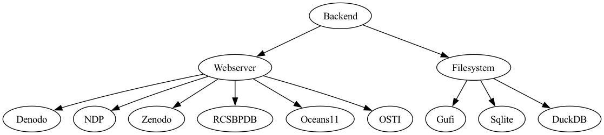

Backends
Backends connect users to DSI Core middleware and allow DSI middleware data structures to read and write to persistent external storage.
Backends are modular to support user contribution, and users are encouraged to offer custom backend abstract classes and backend implementations. A contributed backend abstract class may extend another backend to inherit the properties of the parent.
In order to be compatible with DSI core middleware, backends need to interface with Python built-in data structures and with the Python collections library.
Note that any contributed backends or extensions must include unit tests in backends/tests to demonstrate new Backend capability.
We will not accept pull requests that are not tested.


Figure depicts the current DSI backend class hierarchy.
Filesystem Backends
Filesystem backends enable a user to ingest data into a local database file, and to query that file for metadata. The database file is stored in the user’s local directory and is persistent across user sessions. DSI’s Filesystem backends support POSIX-enforced file permissions, so users can control access to their data.
SQLite
- class dsi.backends.sqlite.Sqlite(filename, **kwargs)
SQLite Filesystem Backend to which a user can ingest/process data, generate a Jupyter notebook, and find occurrences of a search term
- __init__(filename, **kwargs)
Initializes a SQLite backend with a user inputted filename, and creates other internal variables
- close()
Closes the SQLite database’s connection.
- display(table_name, num_rows=25, display_cols=None)
Returns all data from a specified table in this SQLite backend.
- table_namestr
Name of the table to display.
- num_rowsint, optional, default=25
Maximum number of rows to print. If the table contains fewer rows, only those are shown.
- display_colslist of str, optional
List of specific column names to display from the table.
If None (default), all columns are displayed.
- find(query_object)
Searches for all instances of query_object in the SQLite database at the table, column, and cell levels. Includes partial matches as well.
- query_objectint, float, or str
The value to search for across all tables in the backend.
- Returnlist
A list of ValueObjects representing matches.
Note: ValueObjects may vary in structure depending on whether the match occurred at the table, column, or cell level.
Refer to find_table(), find_column(), and find_cell() for the specific structure of each ValueObject type.
- find_cell(query_object, row=False)
Finds all cells in the database that match or partially match the given query_object.
- query_objectint, float, or str
The value to search for at the cell level, across all tables in the backend.
- row: bool, optional, default=False
If True, certain fields in ValueObject will contain entire row’s metadata/data If False, certain fields in ValueObject will only contain the matching cell’s metadata/data.
Return : List of ValueObjects if there is a match.
- ValueObject Structure:
t_name: table name (str)
c_name: list of column names.
If row=True: list of all column names in the table
If row=False: list with one element - the matched column name
value:
If row=True: full row of values
If row=False: value of the matched cell
row_num: row index of the match
type:
If row=True: ‘row’
If row=False: ‘cell’
- find_column(query_object, range=False)
Finds all columns whose names match or partially match the given query_object.
- query_objectstr
The string to search for in column names.
- rangebool, optional, default=False
If True, value in the returned ValueObject will be the [min, max] of the matching numerical column. If False, value in the returned ValueObject will be the full list of column data.
Return : List of ValueObjects if there is a match.
- ValueObject Structure:
t_name: table name (str)
c_name: list containing one element - the matching column name
value:
If range=True: [min, max]
If range=False: list of column data
row_num: None
type:
If range=True: ‘range’
If range=False: ‘column’
- find_relation(column_name, relation)
Finds all rows in the first table of the database that satisfy the relation applied to the given column.
- column_namestr
The name of the column to apply the relation to.
- relationstr
The operator and value to apply to the column. Ex: >4, <4, =4, >=4, <=4, ==4, !=4, (4,5), ~4, ~~4
- Returnlist of ValueObjects
One ValueObject per matching row in that first table.
- ValueObject Structure:
t_name: table name (str)
c_name: list of all columns in the table
value: full row of values
row_num: row index of the match
type: ‘relation’
- find_table(query_object)
Finds all tables whose names match or partially match the given query_object.
- query_objectstr
The string to search for in table names.
- Returnlist of ValueObjects
One ValueObject per matching table.
- ValueObject Structure:
t_name: table name (str)
c_name: list of all columns in the table
value: table data as list of rows (each row is a list)
row_num: None
type: ‘table’
- get_schema()
Returns the structural schema of this database in the form of CREATE TABLE statements.
- Return: str
Each table’s CREATE TABLE statement is concatenated into one large string.
- get_sql_query_table_name(query)
Extracts all table names from a SQL query. Helper function for query_artifacts() that users should not call
- querystr
A SQL query string, typically passed into query_artifacts().
- Return: list of str
List of table names referenced in the query.
- get_table(table_name, dict_return=False)
Retrieves all data from a specified table without requiring knowledge of SQL.
This method is a simplified alternative to query_artifacts() for users who are only familiar with Python.
- table_namestr
Name of the table in the SQLite backend.
- dict_returnbool, optional, default=False
If True, returns the result as an OrderedDict. If False, returns the result as a pandas DataFrame.
- Returnpandas.DataFrame or OrderedDict
If dict_return is False: returns a DataFrame
If dict_return is True: returns an OrderedDict
- ingest_artifacts(collection, isVerbose=False)
Primary function to ingest a collection of tables into the defined SQLite database.
Creates the auto generated runTable if the corresponding flag was set to True when initializing a Core.Terminal Also creates a dsi_units table if any units are associated with the ingested data values.
Can only be called if a SQLite database is loaded as a BACK-WRITE backend. (See core.py for distinction between BACK-READ and BACK-WRITE.)
- collectionOrderedDict
A nested OrderedDict representing multiple tables and their associated data. Each top-level key is a table name, and its value is an OrderedDict of column names and corresponding data lists.
- isVerbosebool, optional, default=False
If True, prints all SQL insert statements during the ingest process for debugging or inspection purposes.
- ingest_table_helper(types, foreign_query=None, isVerbose=False)
Internal use only. Do not call
Helper function to create SQLite table based on a passed in schema.
- typesDataType
- A DataType-derived object that defines:
the table name as a string,
table properties as a dictionary mapping column names to data,
associated units for each column.
- foreign_querystr, optional, default=None
A valid SQL string specifying foreign key constraints to apply to the table.
- isVerbosebool, optional, default=False
If True, prints the CREATE TABLE statements for debugging or inspection.
- list(collection=False)
Return a list of all tables and their dimensions from this SQLite backend
- collectionbool, optional, default False.
If True, returns the list of table names.
If False (default), prints metadata of all the tables: table names and dimensions.
- notebook(interactive=False)
Generates a Jupyter notebook displaying all the data in the SQLite database.
If multiple tables exist, each is displayed as a separate DataFrame.
If database has table relations, it is stored as a separate dataframe. If database has a units table, each table’s units are stored in its corresponding dataframe attrs variable
interactive: default is False. When set to True, creates an interactive Jupyter notebook, otherwise creates an HTML file.
- num_tables()
Prints number of tables in this backend
- overwrite_table(table_name, collection)
Overwrites specified table(s) in this SQLite backend using the provided Pandas DataFrame(s).
If a relational schema has been previously loaded into the backend, it will be reapplied to the table. Note: This function permanently deletes the existing table and its data, before inserting the new data.
- table_namestr or list
If str, name of the table to overwrite in the backend.
If list, list of all tables to overwrite in the backend
- collectionpandas.DataFrame or list of Pandas.DataFrames
If one item, a DataFrame containing the updated data will be written to the table.
If a list, all DataFrames with updated data will be written to their own table
- process_artifacts(only_units_relations=False)
Reads data from the SQLite database into a nested OrderedDict. Keys are table names, and values are OrderedDicts containing table data.
If the database contains PK/FK relationships, they are stored in a special dsi_relations table.
- only_units_relationsbool, default=False
USERS SHOULD IGNORE THIS FLAG. Used internally by sqlite.py.
- ReturnOrderedDict
A nested OrderedDict containing all data from the SQLite database.
- query_artifacts(query, isVerbose=False, dict_return=False, **kwargs)
Executes a SQL query on the SQLite backend.
Supports: - SELECT / PRAGMA: returns DataFrame or OrderedDict depending on dict_return - UPDATE / ALTER: executes command and returns None
- querystr
Must be a SELECT or PRAGMA SQL query. Aggregate functions like COUNT are allowed. If dict_return is True, the query must target a single table and cannot include joins.
- isVerbosebool, optional, default=False
If True, prints the SQL SELECT statements being executed.
- dict_returnbool, optional, default=False
If True, returns the result as an OrderedDict. If False, returns the result as a pandas DataFrame.
- Returnpandas.DataFrame or OrderedDict or None
If query includes UPDATE or ALTER: returns nothing
If dict_return is False: returns a DataFrame
If dict_return is True: returns an OrderedDict
- sql_type(input_list)
Internal use only. Do not call
Evaluates a list and returns the predicted compatible SQLite Type
- input_listlist
A list of values to analyze for type compatibility.
- Return: str
A string representing the inferred SQLite data type for the input list.
- summary(table_name=None)
Returns numerical metadata from tables in the first activated backend.
- table_namestr, optional
If specified, only the numerical metadata for that table is returned as a Pandas DataFrame.
If None (default), names of all tables and metadata for each table is returned as a list. [table_name_list, table1_df, table2_df, table3df …]
- summary_helper(table_name)
Internal use only. Do not call
Generates and returns summary metadata for a specific table in the SQLite backend.
DuckDB
- class dsi.backends.duckdb.DuckDB(filename, **kwargs)
DuckDB Filesystem Backend to which a user can ingest/process data, generate a Jupyter notebook, and find occurrences of a search term
- __init__(filename, **kwargs)
Initializes a DuckDB backend with a user inputted filename, and creates other internal variables
- check_table_relations(tables, relation_dict)
Internal use only. Do not call.
Checks if a user-loaded schema has circular dependencies.
If no circular dependencies are found, returns a list of tables ordered from least dependent to most dependent, suitable for staged ingestion into the DuckDB backend.
Note: This method is intended for internal use only. DSI users should not call this directly.
- tableslist of str
List of table names to ingest into the DuckDB backend.
- relation_dictOrderedDict
An OrderedDict describing table relationships. Structured as the dsi_relations object with primary and foreign keys.
- Return: tuple of (has_cycle, ordered_tables)
has_cycle (bool): True if a circular dependency is detected.
ordered_tables (list or None): Ordered list of tables if no cycle is found; None if a circular dependency exists.
- close()
Closes the DuckDB database’s connection.
Return: None
- display(table_name, num_rows=25, display_cols=None)
Returns all data from a specified table in this DuckDB backend.
- table_namestr
Name of the table to display.
- num_rowsint, optional, default=25
Maximum number of rows to print. If the table contains fewer rows, only those are shown.
- display_colslist of str, optional
List of specific column names to display from the table.
If None (default), all columns are displayed.
- find(query_object)
Searches for all instances of query_object in the DuckDB database at the table, column, and cell levels. Includes partial matches as well.
- query_objectint, float, or str
The value to search for across all tables in the backend.
- Returnlist
A list of ValueObjects representing matches.
Note: ValueObjects may vary in structure depending on whether the match occurred at the table, column, or cell level.
Refer to find_table(), find_column(), and find_cell() for the specific structure of each ValueObject type.
- find_cell(query_object, row=False)
Finds all cells in the database that match or partially match the given query_object.
- query_objectint, float, or str
The value to search for at the cell level, across all tables in the backend.
- row: bool, optional, default=False
If True, certain fields in ValueObject will contain entire row’s metadata/data If False, certain fields in ValueObject will only contain the matching cell’s metadata/data.
Return : List of ValueObjects if there is a match.
- ValueObject Structure:
t_name: table name (str)
c_name: list of column names.
If row=True: list of all column names in the table
If row=False: list with one element - the matched column name
value:
If row=True: full row of values
If row=False: value of the matched cell
row_num: row index of the match
type:
If row=True: ‘row’
If row=False: ‘cell’
- find_column(query_object, range=False)
Finds all columns whose names match or partially match the given query_object.
- query_objectstr
The string to search for in column names.
- rangebool, optional, default=False
If True, value in the returned ValueObject will be the [min, max] of the matching numerical column. If False, value in the returned ValueObject will be the full list of column data.
Return : List of ValueObjects if there is a match.
- ValueObject Structure:
t_name: table name (str)
c_name: list containing one element - the matching column name
value:
If range=True: [min, max]
If range=False: list of column data
row_num: None
type:
If range=True: ‘range’
If range=False: ‘column’
- find_relation(column_name, relation)
Finds all rows in the first table of the database that satisfy the relation applied to the given column.
- column_namestr
The name of the column to apply the relation to.
- relationstr
The operator and value to apply to the column. Ex: >4, <4, =4, >=4, <=4, ==4, !=4, (4,5), ~4, ~~4
- Returnlist of ValueObjects
One ValueObject per matching row in that first table.
- ValueObject Structure:
t_name: table name (str)
c_name: list of all columns in the table
value: full row of values
row_num: row index of the match
type: ‘relation’
- find_table(query_object)
Finds all tables whose names match or partially match the given query_object.
- query_objectstr
The string to search for in table names.
- Returnlist of ValueObjects
One ValueObject per matching table.
- ValueObject Structure:
t_name: table name (str)
c_name: list of all columns in the table
value: table data as list of rows (each row is a list)
row_num: None
type: ‘table’
- get_schema()
Returns the structural schema of this database in the form of CREATE TABLE statements.
- Return: str
Each table’s CREATE TABLE statement is concatenated into one large string.
- get_sql_query_table_name(query)
Extracts all table names from a SQL query. Helper function for query_artifacts() that users do not need to call
- querystr
A SQL query string, typically passed into query_artifacts().
- Return: list of str
List of table names referenced in the query.
- get_table(table_name, dict_return=False)
Retrieves all data from a specified table without requiring knowledge of SQL.
This method is a simplified alternative to query_artifacts() for users who are only familiar with Python.
- table_namestr
Name of the table in the DuckDB backend.
- dict_returnbool, optional, default=False
If True, returns the result as an OrderedDict. If False, returns the result as a pandas DataFrame.
- Returnpandas.DataFrame or OrderedDict
If dict_return is False: returns a DataFrame
If dict_return is True: returns an OrderedDict
- ingest_artifacts(collection, isVerbose=False)
Primary function to ingest a collection of tables into the defined DuckDB database.
Creates the auto generated runTable if the corresponding flag was set to True when initializing a Core.Terminal Also creates a dsi_units table if any units are associated with the ingested data values.
Cannot ingest data if it has a complex schema with circular dependencies, ex: A->B->C->A
Can only be called if a DuckDB database is loaded as a BACK-WRITE backend. (See core.py for distinction between BACK-READ and BACK-WRITE.)
- collectionOrderedDict
A nested OrderedDict representing multiple tables and their associated data. Each top-level key is a table name, and its value is an OrderedDict of column names and corresponding data lists.
- isVerbosebool, optional, default=False
If True, prints all SQL insert statements during the ingest process for debugging or inspection purposes.
- ingest_table_helper(types, foreign_query=None, isVerbose=False)
Internal use only. Do not call
Helper function to create DuckDB table based on a passed in schema.
- typesDataType
- A DataType-derived object that defines:
the table name as a string,
table properties as a dictionary mapping column names to data,
associated units for each column.
- foreign_querystr, optional, default=None
A valid SQL string specifying foreign key constraints to apply to the table.
- isVerbosebool, optional, default=False
If True, prints the CREATE TABLE statements for debugging or inspection.
- list(collection=False)
Return a list of all tables and their dimensions from this DuckDB backend
- collectionbool, optional, default False.
If True, returns the list of table names.
If False (default), prints metadata of all the tables: table names and dimensions.
- notebook(interactive=False)
Notebook generation is not supported for DuckDB backend
- num_tables()
Prints number of tables in this backend
- overwrite_table(table_name, collection)
Overwrites specified table(s) in this DuckDB backend using the provided Pandas DataFrame(s).
If a relational schema has been previously loaded into the backend, it will be reapplied to the table. Cannot accept any schemas with circular dependencies.
Note: This function permanently deletes the existing table and its data, before inserting the new data.
- table_namestr or list
If str, name of the table to overwrite in the backend.
If list, list of all tables to overwrite in the backend
- collectionpandas.DataFrame or list of Pandas.DataFrames
If one item, a DataFrame containing the updated data will be written to the table.
If a list, all DataFrames with updated data will be written to their own table
- process_artifacts(only_units_relations=False)
Reads data from the DuckDB database into a nested OrderedDict. Keys are table names, and values are OrderedDicts containing table data.
If the database contains PK/FK relationships, they are stored in a special dsi_relations table.
- only_units_relationsbool, default=False
USERS SHOULD IGNORE THIS FLAG. Used internally by duckdb.py.
- ReturnOrderedDict
A nested OrderedDict containing all data from the DuckDB database.
- query_artifacts(query, isVerbose=False, dict_return=False, **kwargs)
Executes a SQL query on the DuckDB backend.
Supports: - SELECT / PRAGMA: returns DataFrame or OrderedDict depending on dict_return - UPDATE / ALTER: executes command and returns None
- querystr
Must be a SELECT or PRAGMA SQL query. Aggregate functions like COUNT are allowed. If dict_return is True, the query must target a single table and cannot include joins.
- isVerbosebool, optional, default=False
If True, prints the SQL SELECT statements being executed.
- dict_returnbool, optional, default=False
If True, returns the result as an OrderedDict. If False, returns the result as a pandas DataFrame.
- Returnpandas.DataFrame or OrderedDict or None
If query includes UPDATE or ALTER: returns nothing
If dict_return is False: returns a DataFrame
If dict_return is True: returns an OrderedDict
- sql_type(input_list)
Internal use only. Do not call
Evaluates a list and returns the predicted compatible DuckDB Type
- input_listlist
A list of values to analyze for type compatibility.
- Return: str
A string representing the inferred DuckDB data type for the input list.
- summary(table_name=None)
Returns numerical metadata from tables in the first activated backend.
- table_namestr, optional
If specified, only the numerical metadata for that table is returned as a Pandas DataFrame.
If None (default), names of all tables and metadata for each table is returned as a list. [table_name_list, table1_df, table2_df, table3df …]
- summary_helper(table_name)
Internal use only. Do not call
Generates and returns summary metadata for a specific table in the DuckDB backend.
GUFI
- class dsi.backends.gufi.Gufi(gufi_prefix, gufi_index, dsi_table_name, dsi_columns, gufi_columns, collection_name, dsi_db, verbose=False)
GUFI Datastore
- __init__(gufi_prefix, gufi_index, dsi_table_name, dsi_columns, gufi_columns, collection_name, dsi_db, verbose=False)
gufi_prefix: the directory where GUFI is installed
gufi_index: the directory where GUFI’s indexes are
dsi_table_name: the DSI table name that has the UUID for each file as a column
dsi_columns: the DSI table columns that should be included in the join with GUFI
gufi_columns: the GUFI columns that should be included in the join with DSI
collection_name: the name that identifies the collection that the DSI database belongs to
dsi_db: the path to the dsi db
verbose: print debugging statements or not
- query_artifacts(query)
Retrieves GUFI’s metadata joined with a dsi database query: an sql query into the dsi_entries table
Webserver Backends
Webserver backends enable a user to connect to a remote data platform and interact with retrieved data in-memory.
Oceans11 (Read-only)
Oceans11 Webserver Backend for DSI
Read-only backend that pulls metadata from the DSI-based https://oceans11.lanl.gov data catalog and exposes it as in-memory DSI tables.
- class dsi.backends.oceans11.Oceans11(url=None, params=None, **kwargs)
DSI-based web backend for querying Oceans11 metadata in memory.
- __init__(url=None, params=None, **kwargs)
Initialize the backend and optionally load data from Oceans11.
Parameters
- urlstr, optional
Base Oceans11 catalog URL.
- paramsdict or list[dict], optional
Initial Tier-1 search parameters. Supported search keys include q, keyword, osti_id, title, author/authors, subject/subjects, doi, report_number, rows, and download_all.
- workspacestr, optional
Directory where downloaded catalog/Tier-2 files are stored.
- only_validatebool, optional
Used by backend discovery. If True, validate local constructor configuration only and return without contacting Oceans11.
- close()
Close the backend and clear all cached state.
- display(table_name='records', num_rows=25, display_cols=None)
Return rows from a cached Oceans11 table as a DataFrame.
- find(query_object, **kwargs)
Search for a value across table, column, and cell levels.
- find_cell(query_object, row=False, **kwargs)
Find matching cells across all cached tables.
When row=False, return one ValueObject per matching cell. When row=True, return each matching row only once.
- find_column(query_object, **kwargs)
Find cached columns whose names contain
query_object.
- find_relation(column_name, relation, **kwargs)
Find rows in cached tables satisfying a relation.
Searches every loaded table containing
column_name.
- find_table(query_object, **kwargs)
Find cached tables whose names contain
query_object.
- get_schema()
Return a lightweight CREATE TABLE-style schema for cached tables.
- get_table(table_name='records', dict_return=False)
Return all data from a cached Oceans11 table.
- ingest_artifacts(artifacts, **kwargs) None
Oceans11 is read-only.
- list(collection=False)
List loaded Oceans11 tables.
- notebook(**kwargs)
Notebook generation is not supported for Oceans11.
- num_tables()
Print the number of cached Oceans11 tables.
- process_artifacts()
Return all cached Oceans11 data for export/process.
Includes Tier-1 catalog tables and loaded Tier-2 tables.
- query_artifacts(query, dict_return=True, **kwargs)
Public query() is not supported for Oceans11 because it is non-SQL.
The private Tier-1 catalog search remains SQL-backed internally, but users should use find(), search(), find_relation(), or get_table().
- search(params, download=False)
Retrieves metadata or data for entries in a specified dataset.
Parameters
- paramsdict
Identifies the dataset and, optionally, a specific entry. For example, {“database_id”: 1} retrieves metadata for all entries in the dataset, while {“database_id”: 1, “entry_id”: 1} retrieves data for a specific entry (if supported).
- downloadbool, optional, default=False
If True, downloads specified data to a local directory. If False, returns dataset’s entry metadata when no entry is specified, or references to a specified entry’s data for separate download.
Returns
- pandas.DataFrame
Metadata for a dataset’s entries or data references for a specified entry.
- None
If no metadata found or data directly downloaded with (download=True)
- summary(table_name=None)
Return column-level summary metadata for cached Oceans11 tables.
With no table name, returns
[table_name_list, table1_df, table2_df, ...].
- validate_connection(**kwargs)
Validate that the Oceans11 catalog is accessible and usable.
- Tests the connection by calling DSI Federated’s pull_data() to:
Download the oceans11.db catalog from https://oceans11.lanl.gov/dataCatalog/
Set self.catalog_path to the download location
If this method is called explicitly with
only_validate=True, it removes the temporary downloaded validation folder.- Returnbool
True if connection is valid
OSTI (Read-only)
OSTI Backend for DSI
Read-only access that pulls metadata from REST-based OSTI backend and exposes it as an in-memory DSI table: records
- class dsi.backends.osti.OSTI(url=None, params=None, **kwargs)
REST-based web backend for querying OSTI metadata in-memory
- __init__(url=None, params=None, **kwargs)
Initialize backend and optionally load data from REST API.
- urlstr, optional
Base OSTI URL. If None, a default OSTI endpoint is used.
- paramsdict, optional
Dictionary of initial query parameters used to fetch data from OSTI.
- Supported keys:
“q”,
“osti_id”,
“doi”,
“fulltext”,
“biblio”,
“author”,
“title”,
“identifier”,
“sponsor_org”,
“research_org”,
“contributing_org”,
“source_id”,
“publication_date_start”,
“publication_date_end”,
“entry_date_start”,
“entry_date_end”,
“language”,
“country”,
“site_ownership_code”,
“subject”,
“has_fulltext”,
“sort”,
“order”,
“rows”,
“page”,
- **kwargsdict
Additional keyword arguments.
- api_keystr, optional
API key for authentication
- verify_sslbool, optional
Toggle SSL verification (default False)
- close()
Reset backend state and clear cached data.
- display(table_name='records', num_rows=25, display_cols=None)
Displays rows from the ‘records’ table.
- table_namestr, optional, default = ‘records’
Name of the table to display
- num_rowsint, default 25
Number of rows to display
- display_colslist of str, optional
Subset of columns to display
- Returnpandas.DataFrame
Displayed table data with long strings truncated
- find(query_object, **kwargs)
Searches for all instances of query_object across the table, column, and cell levels.
- query_objectint, float, or str
The value to search for across all tables in the backend
- **kwargsdict
Additional keyword arguments
- Returnlist of ValueObjects representing matches across:
table names
column names
cell values
- ValueObject Structure:
t_name : (str) Table name
c_name : (list) Column name(s)
row_num : (int or None) Row index
value : (any) Matched value or data
type : (str) {‘table’, ‘column’, ‘cell’}
- find_cell(query_object, row=False, **kwargs)
Finds all cells that match the given query_object.
Exact match for all data types, plus case-insensitive partial match for strings.
- query_objectint, float, or str
The value to search for within table cells.
- rowbool, optional, default=False
If True, return the entire row containing the matching cell. If False, return only the matching cell.
- **kwargsdict
Additional keyword arguments.
- Returnlist of ValueObject
One ValueObject per matching cell.
- ValueObject Structure:
t_name : table name
- c_name :
row=False: list containing matched column name
row=True: list of all column names
row_num : row index of match
- value :
row=False: matched cell value
row=True: full row of values
- type :
row=False: ‘cell’
row=True: ‘row’
- find_column(query_object, **kwargs)
Finds all columns whose names contain the given query_object. Search is case-insensitive.
- query_objectstr
The string to match against column names
- **kwargsdict
Additional keyword arguments
- Returnlist of ValueObject
One ValueObject per matching column
- ValueObject Structure:
t_name : (str) Table name
c_name : (list) List with the matched column name
value : (list) Full column data
row_num : (None)
type : (str) ‘column’
- find_relation(column_name, relation, **kwargs)
Finds all rows in the records table that satisfy a relation applied to the given column.
- column_namestr
Name of the column to apply the relation to.
- relationstr
Operator and value to apply to the column. Ex: >4, <4, =4, >=4, <=4, ==4, !=4, (4,5), ~4, ~~4
- Returnlist of ValueObject
One ValueObject per matching row.
- ValueObject Structure:
t_name : table name
c_name : list of all columns
value : full row of values
row_num : 1-based row index
type : ‘relation’
- find_table(query_object, **kwargs)
Finds all tables whose names contain the given query_object. Search is case-insensitive.
- query_objectstr
The string to match against table names
- **kwargsdict
Additional keyword arguments
- Returnlist of ValueObject
One ValueObject per matching table
- ValueObject Structure:
t_name : (str) Table name
c_name : (list) List of all columns in the table
value : (dict) Full table data (dict of columns)
row_num : (None)
type : (str) ‘table’
- get_schema()
Return a lightweight schema description of cached tables from OSTI.
- Returnstr
Each table’s structural schema is combined into one large string.
- get_table(table_name='records', dict_return=False)
Returns all data from the ‘records’ table
- table_namestr, optional, default=’records’
table_name must be ‘records’ or None
- dict_returnbool, default False
If True, returns OrderedDict. If False, returns DataFrame.
Return : OrderedDict or pandas.DataFrame
- ingest_artifacts(artifacts, **kwargs) None
Ingest is not supported for the OSTI backend.
- list(collection=False)
Return a list of all tables and their dimensions from this OSTI backend.
- collectionbool, optional, default=False
If True, returns the list of table names.
If False (default), prints table names and dimensions for all tables.
- notebook(**kwargs)
Notebook generation not supported for OSTI backend.
- num_tables()
Prints the number of tables in this backend.
- process_artifacts()
Returns all cached OSTI data:
{ "records": <records table> }
Useful for exporting or writing data to external formats.
- ReturnOrderedDict
Cached records table
- query_artifacts(query, dict_return=True, **kwargs)
Query not supported for OSTI backend (non-SQL backend).
OSTI is a read-only metadata backend that does not support SQL queries. Use find(), search(), or find_relation() for searching data instead.
Parameters
- querystr
Query string (unused)
- dict_returnbool, default True
Return format flag (unused)
- **kwargsdict
Additional keyword arguments (unused)
Raises
- NotImplementedError
Always raised as OSTI does not support SQL queries.
- search(params, download=False)
Retrieves metadata or data for entries in a specified dataset.
Parameters
- paramsdict
Identifies the dataset and, optionally, a specific entry. For example, {“database_id”: 1} retrieves metadata for all entries in the dataset, while {“database_id”: 1, “entry_id”: 1} retrieves data for a specific entry (if supported).
- downloadbool, optional, default=False
If True, downloads specified data to a local directory. If False, returns dataset’s entry metadata when no entry is specified, or references to a specified entry’s data for separate download.
Returns
- pandas.DataFrame
Metadata for a dataset’s entries or data references for a specified entry.
- None
If no metadata found or data directly downloaded with (download=True)
- summary(table_name=None)
Returns numerical metadata for the cached OSTI records table.
- table_namestr, optional
If specified, only the numerical metadata for that table is returned as a Pandas DataFrame.
If None (default), names of all tables and metadata for each table are returned as a list: [table_name_list, table1_df, table2_df, …]
- validate_connection()
Validates that the base OSTI URL is accessible and functional.
- Tests the connection by making an API call to verify:
URL is reachable
API responds with valid JSON
Response format is a list of records
- Returnbool
True if connection is valid False if connection is invalid
- validate_urls()
Validate URL fields in the records table.
- Adds boolean columns indicating whether each URL is reachable:
citation_url_valid
citation_doe_pages_url_valid
fulltext_url_valid
Zenodo (Read-only)
Zenodo Webserver Backend for DSI.
Read-only backend that pulls public metadata from Zenodo and exposes it as two stable in-memory DSI tables:
datasets resources
Design
datasets: one row per Zenodo record
resources: one row per file attached to any Zenodo record
no errors table
Supported inputs
params={“keywords”: “…”, “limit”: 5}
params={“q”: “…”, “limit”: 5}
params={“record_id”: “16537543”}
params={“doi”: “10.5281/zenodo.16537543”}
Convenience inputs are also supported: - Zenodo(keywords=”climate”, limit=5) - Zenodo(record_id=”16537543”) - Zenodo(doi=”10.5281/zenodo.16537543”)
Official Zenodo API used
GET https://zenodo.org/api/records GET https://zenodo.org/api/records/{record_id}
- class dsi.backends.zenodo.Zenodo(url=None, params=None, keywords=None, record_id=None, doi=None, limit=None, **kwargs)
Zenodo read-only Webserver backend for DSI.
- This backend exposes two stable DSI tables:
datasets
resources
- __init__(url=None, params=None, keywords=None, record_id=None, doi=None, limit=None, **kwargs) None
Initialize Zenodo backend.
- find(query_object, **kwargs)
Search table names, column names, and cell values.
Returns
- list[ValueObject]
Combined results from find_table(), find_column(), and find_cell().
- find_cell(query_object, row=True, **kwargs)
Search input across cell values.
Parameters
- query_objectAny
Value to search for.
- rowbool, optional
If True, return full matching rows. If False, return individual matching cells.
Returns
list[ValueObject]
- find_column(query_object, range=False, **kwargs)
Search input across column names.
Returns
list[ValueObject]
- find_relation(query, relation=None, **kwargs)
Supports both condition queries and Zenodo API-backed lookup/search.
- Examples:
find_relation(“resource_count”, “>= 1”) find_relation(“dataset_id”, “= 16537543”) find_relation(“title”, “~~ climate”) find_relation(“resource_count >= 1”) find_relation(“16537543”) find_relation(“10.5281/zenodo.16537543”) find_relation(“climate”, limit=2) find_relation({“keywords”: “climate”, “limit”: 2}) find_relation([“16537543”, “16537544”])
- ingest_artifacts(artifacts, **kwargs) None
Zenodo is read-only.
- notebook(**kwargs)
Notebook generation is not supported for the Zenodo backend.
- search(params, download=False)
Retrieves metadata or data for entries in a specified dataset.
Parameters
- paramsdict
Identifies the dataset and, optionally, a specific entry. For example, {“database_id”: 1} retrieves metadata for all entries in the dataset, while {“database_id”: 1, “entry_id”: 1} retrieves data for a specific entry (if supported).
- downloadbool, optional, default=False
If True, downloads specified data to a local directory. If False, returns dataset’s entry metadata when no entry is specified, or references to a specified entry’s data for separate download.
Returns
- pandas.DataFrame
Metadata for a dataset’s entries or data references for a specified entry.
- None
If no metadata found or data directly downloaded with (download=True)
NDP (Read-only)
NDP-CKAN Webserver Backend for DSI
Read-only backend that pulls metadata from CKAN-based NDP instances and exposes it as in-memory DSI tables: datasets and resources.
- class dsi.backends.ndp.NDP(url=None, params=None, **kwargs)
CKAN-based web backend for querying NDP metadata in-memory
- __init__(url=None, params=None, **kwargs)
Initialize backend and optionally load data from CKAN API.
Parameters
- urlstr, optional
Base CKAN URL. If None, a default CKAN endpoint is used.
- paramsdict, optional
Dictionary of initial query parameters used to fetch data from CKAN.
- Supported keys:
keywords : str - Full-text search
creator : str - Creator name filter (from extras.creatorName)
organization : str - Organization name filter (auto-slugified)
license : str - License filter
tags : list - List of tags to filter by
group : list - List of groups/collections to filter by (auto-slugified)
formats : list - List of resource formats (e.g., [‘CSV’, ‘JSON’])
limit : int - Maximum number of datasets to retrieve (default: 100)
- **kwargsdict
- Additional keyword arguments:
- api_keystr, optional
API key for authentication
- verify_sslbool, optional
Toggle SSL verification (default False)
- close()
Resets backend state and clears all cached data.
- display(table_name, num_rows=25, display_cols=None)
Displays rows from a specified table.
By default, shows ALL columns (including raw_* columns) with FULL content. You can optionally specify a subset of columns to display.
Parameters
- table_namestr
Name of the table to display
- num_rowsint, default 25
Number of rows to display. Set to None to show all rows.
- display_colslist of str, optional
Specific columns to display. If None, shows all columns.
Returns
- None
Prints formatted table to console
- find(query_object, **kwargs)
Searches for all instances of query_object across all tables.
Searches at the table, column, and cell levels.
Parameters
- query_objectint, float, or str
The value to search for across all tables in the backend
- **kwargsdict
Additional keyword arguments
Returns
- list of ValueObject
- A list of ValueObjects representing matches across:
table names
column names
cell values
Notes
- ValueObject Structure:
- t_namestr
Table name
- c_namelist
Column name(s)
- row_numint or None
Row index
- valueany
Matched value or data
- typestr
{‘table’, ‘column’, ‘cell’}
- find_cell(query_object, **kwargs)
Finds all cells that match the given query_object.
- Matching behavior:
Exact match for all data types
Case-insensitive partial match for strings
String representation match for complex objects (dict, list)
Parameters
- query_objectint, float, or str
The value to search for within table cells
- **kwargsdict
Additional keyword arguments
Returns
- list of ValueObject
One ValueObject per matching cell, containing full row data
- find_column(query_object, **kwargs)
Finds all columns whose names contain the given query_object.
Search is case-insensitive.
Parameters
- query_objectstr
The string to match against column names
- **kwargsdict
Additional keyword arguments
Returns
- list of ValueObject
One ValueObject per matching column
Notes
- ValueObject Structure:
- t_namestr
Table name
- c_namelist
List containing the matched column name
- valuelist
Full column data
row_num : None
type : ‘column’
- find_relation(column_name, relation, **kwargs)
Find rows where column matches relation (e.g., ‘num_resources > 5’).
- find_table(query_object, **kwargs)
Finds all tables whose names contain the given query_object.
Search is case-insensitive.
Parameters
- query_objectstr
The string to match against table names
- **kwargsdict
Additional keyword arguments
Returns
- list of ValueObject
One ValueObject per matching table
Notes
- ValueObject Structure:
- t_namestr
Table name
- c_namelist
List of all columns in the table
- valuedict
Full table data (dict of columns)
row_num : None
type : ‘table’
- get_schema(table_name: str | None = None)
Returns schema information for all tables or a specific table in SQLite CREATE TABLE format.
Shows table structure with column names and types (INTEGER, REAL, TEXT, OBJECT, etc.) similar to SQL backends.
Parameters
- table_namestr, optional
If provided, returns schema for only that table. If None (default), returns schema for all tables.
Returns
- str
SQL-style CREATE TABLE statements
- get_table(table_name, dict_return=False)
Returns all data from a specified table.
Parameters
- table_namestr
Must be ‘datasets’ or ‘resources’
- dict_returnbool, default False
If True, returns OrderedDict (raw collection). If False (default), returns pandas DataFrame.
Returns
- OrderedDict or pandas.DataFrame
Depends on dict_return parameter
- ingest_artifacts(artifacts, **kwargs) None
Ingest not supported for NDP backend (read-only).
Parameters
- artifactsany
Artifacts to ingest (unused)
- **kwargsdict
Additional keyword arguments (unused)
Returns
None
Raises
- NotImplementedError
Always raised as NDP backend is read-only
- list(collection=False)
Lists tables or prints metadata in SQLite-compatible format.
Parameters
- collectionbool, default False
If True, return list of table names. If False, print table names with dimensions.
Returns
- list or None
Table names if collection=True, otherwise None
- notebook(**kwargs)
Notebook generation not supported for NDP backend.
- num_tables(**kwargs)
Prints the number of tables currently loaded OR returns number of datasets (rows in the datasets table).
- NDP backend has 2 main tables:
datasets: Dataset metadata. Each row is a different dataset retrieved from NDP
resources: Combined resources from all datasets
Returns
If kwargs is empty: None
If kwargs has key ‘table_name’ with value ‘datasets: returns num datasets retrieved by NDP as an int
- process_artifacts()
Returns all cached tables in tiered format.
Structure is:
{ "datasets": <dataset table>, "<dataset_name>": <resource table>, ... }Useful for exporting or writing to external systems.
Returns
- OrderedDict
All cached tables in tiered structure
- query_artifacts(query, dict_return=True, **kwargs)
Query not supported for NDP backend (non-SQL backend).
NDP is a read-only metadata backend that does not support SQL queries. Use find(), search(), or find_relation() for searching data instead.
Parameters
- querystr
Query string (unused)
- dict_returnbool, default True
Return format flag (unused)
- **kwargsdict
Additional keyword arguments (unused)
Raises
- NotImplementedError
Always raised as NDP does not support SQL queries
- search(params, download=False)
Retrieves metadata or data for entries in a specified dataset.
Parameters
- paramsdict
Identifies the dataset and, optionally, a specific entry. For example, {“database_id”: 1} retrieves metadata for all entries in the dataset, while {“database_id”: 1, “entry_id”: 1} retrieves data for a specific entry (if supported).
- downloadbool, optional, default=False
If True, downloads specified data to a local directory. If False, returns dataset’s entry metadata when no entry is specified, or references to a specified entry’s data for separate download.
Returns
- pandas.DataFrame
Metadata for a dataset’s entries or data references for a specified entry.
- None
If no metadata found or data directly downloaded with (download=True)
- summary(table_name=None)
Returns detailed column-level statistics for tables.
Parameters
- table_namestr, optional
If provided, returns summary for that table. Must be ‘datasets’, ‘resources’, or ‘tags’.
Returns
- pandas.DataFrame or list
If table_name specified: single DataFrame
If table_name=None: [table_names, df1, df2, …]
Notes
For OBJECT columns: min/max are lexicographic (alphabetical) for short text
Skips min/max for: long text (>80 chars), URLs, metadata, complex values
Numeric columns get full statistics: min, max, avg, std_dev
- validate_connection()
Validates that the base CKAN URL is accessible and functional.
- This method tests the connection by making a simple API call to verify:
The URL is reachable
The CKAN API is responding
Returns
- bool
True if connection is valid. False if connection is not valid.
- validate_urls()
Validates resource URLs in the unified resources table. Adds ‘url_valid’ column to resources table.
Denodo (Read-only)
Denodo Data Catalog Backend for DSI
Read-only backend that pulls metadata from a Denodo Data Catalog REST API
and exposes it as in-memory DSI tables. Which tables fill depends on the
params passed to the backend:
Table |
Filled by |
Cost |
|---|---|---|
|
|
a few requests |
|
|
two requests |
|
|
a few dozen requests |
|
|
one request per view |
|
|
the same request |
Every table is created with all of its columns, whether or not it holds
rows, so summary() and display() work before anything is fetched.
denodo_columns and denodo_properties come from the same per-view
request, so one harvest fills both. That request takes roughly a second
per view, which is why a scope is required rather than defaulted: a
keyword, {"database": "<name>"}, or a list of "database.view"
names. Progress is printed while it runs, and views whose details could
not be fetched are recorded on backend.failed_views.
Nothing site-specific is stored in this file. The catalog URL and the
OAuth client settings resolve as argument, then environment variable,
then ~/.denodo/config.json.
Authentication uses the OAuth 2.0 authorization-code flow and opens a
browser on first use. Pass token=... to reuse a token you already
hold. Tokens expire after about an hour and are not refreshed, so build
a new backend rather than expecting one to renew itself.
See examples/backends/denodo/ for runnable examples and a full
description of every column.
- class dsi.backends.denodo.Denodo(url=None, params=None, **kwargs)
Denodo Data Catalog web backend for querying view metadata in-memory
- __init__(url=None, params=None, **kwargs)
Initialize backend and optionally load data from the Denodo Data Catalog REST API.
Parameters
- urlstr, optional
Base Data Catalog URL. If None, resolved from the DENODO_BASE_URL environment variable, then from the local config file ~/.denodo/config.json.
- paramsdict, optional
Dictionary of initial query parameters used to fetch data.
- Supported keys:
keywords : str - Full-text metadata search
database : str - Load all views from one database
view : str - Direct view lookup (requires ‘database’)
limit : int - Maximum number of views to retrieve (default: 100)
- **kwargsdict
- Additional keyword arguments:
- configstr or Path, optional
Path to a JSON config file. Overrides the default ~/.denodo/config.json. Lets a project keep its settings beside its code instead of in the home directory.
- tokenstr, optional
OAuth Bearer token. If not provided, the OAuth authorization-code flow runs automatically (see get_token()).
- server_idint, optional
Denodo server id (default 1)
- verify_sslbool, optional
Toggle SSL verification (default True)
Note
Authentication happens before initialization: a valid OAuth Bearer token is required before the backend can load any data. Tokens expire, so a new login may be needed each session.
- close()
Clear all loaded data; registered tables go back to empty.
- display(table_name, num_rows=25, display_cols=None, **kwargs)
Return the first num_rows rows of a table.
- display_colslist of str, optional
Only these columns (errors if one does not exist).
- find(query_object, **kwargs)
Search table names, column names and cell values.
- find_cell(query_object, row=False, **kwargs)
Cells equal to query_object, or (for strings) containing it, case-insensitive.
- rowbool, default False
False -> one result per matching cell, where value is the cell. True -> one result per matching row, where value is a list of the row’s values and c_name is every column. dsi.search() uses row=True.
- find_column(query_object, range=False, **kwargs)
Columns whose name contains query_object (case-insensitive).
- rangebool, default False
True -> for all-numeric columns, value is [min, max] instead of the full column data.
- find_relation(column_name, relation, **kwargs)
Rows where column_name satisfies relation (DSI parses dsi.find(“ranking > 5”) into (“ranking”, “> 5”)).
Supported relations: > < >= <= == = != , ~ / ~~ (contains), and (low, high) for an inclusive range.
- find_table(query_object, **kwargs)
Tables whose name contains query_object (case-insensitive).
- get_schema()
Return a CREATE TABLE-style description of every registered table. Column types are inferred from the first non-null value (TEXT if none).
- get_table(table_name, dict_return=False, **kwargs)
Return one table.
- table_namestr
Name of a registered table (a key of self.schemas).
- dict_returnbool, default False
True -> column-oriented OrderedDict; False -> pandas DataFrame. An empty table still has every column of its schema.
- ingest_artifacts(artifacts, **kwargs) None
Not supported - Denodo backend is read-only.
- list(collection=False, **kwargs)
- collectionbool, default False
True -> return the table names; False -> print each table’s size.
- num_tables(**kwargs)
Print and return the number of loaded tables.
- process_artifacts(**kwargs)
Return all loaded tables: {table_name: column-oriented OrderedDict}.
- query_artifacts(query, **kwargs)
Not supported - tables are in memory, there is no SQL engine.
- search(params, download=False)
Retrieves metadata or data for entries in a specified dataset.
Parameters
- paramsdict
Identifies the dataset and, optionally, a specific entry. For example, {“database_id”: 1} retrieves metadata for all entries in the dataset, while {“database_id”: 1, “entry_id”: 1} retrieves data for a specific entry (if supported).
- downloadbool, optional, default=False
If True, downloads specified data to a local directory. If False, returns dataset’s entry metadata when no entry is specified, or references to a specified entry’s data for separate download.
Returns
- pandas.DataFrame
Metadata for a dataset’s entries or data references for a specified entry.
- None
If no metadata found or data directly downloaded with (download=True)
- summary(table_name=None, **kwargs)
Per-column statistics (same style as the RCSBPDB backend).
- table_namestr, optional
Given -> one DataFrame for that table. None -> [table_names, df1, df2, …] for every table.
- validate_connection()
Validates that the Data Catalog base URL is accessible and functional.
- This method tests the connection by making a simple API call to verify:
The URL is reachable
The Data Catalog REST API is responding
The OAuth token is accepted
Returns
- bool
True if connection is valid. False if connection is not valid.
RCSBPDB (Read-only)
RCSBPDB Webserver Backend for DSI
Read-only metadata-first backend that retrieves rcsb pdb metadata and exposes it as in-memory DSI tables.
Access modes
Identifier-driven mode - DOI input, e.g. “10.2210/pdb1cbs/pdb” - PDB ID input, e.g. “1CBS”
Query-driven mode, closer to NDP - params={“keywords”: “hemoglobin”, “limit”: 5} - find_relation({“keywords”: “hemoglobin”, “limit”: 5}) - find_relation(“hemoglobin”)
DOI behavior
RCSB-style DOI input is supported through identifiers or params. Only DOIs of the form 10.2210/pdbXXXX/pdb are converted directly into PDB IDs. General publication DOI search is not currently supported.
REST flow
RCSB Search API -> PDB IDs -> RCSB Data API -> normalized DSI tables
Tables
datasets
resources
errors
Tier mapping
self.tables[“datasets”] = Tier 1 datasets self.tables[“resources”] = Tier 2 normalized resources self.tables[“errors”] = failed/skipped lookups
Current scope
Metadata-first
Read-only
REST APIs only
Exposes mmCIF download URLs
Does not parse raw mmCIF content yet
identifiers
__init__()
_load_initial_data()
lookup_identifier()
lookup_rcsbpdb()
_request()
GET https://data.rcsb.org/rest/v1/core/entry/{pdb_id}
params
__init__()
_load_from_params()
_search_rcsb()
_build_search_query()
_post_json()
- class dsi.backends.rcsbpdb.RCSBPDB(url: str | None = None, identifiers: list[str] | None = None, params: dict[str, Any] | None = None, **kwargs)
rcsbpdb/RCSB metadata backend for DSI.
Implements the DSI Webserver interface and exposes RCSB/rcsbpdb metadata as in-memory DSI tables.
- __init__(url: str | None = None, identifiers: list[str] | None = None, params: dict[str, Any] | None = None, **kwargs) None
Initialize rcsbpdb backend and optionally load data from RCSB APIs.
- static classify_usability(exts: Iterable[str | None]) str
Classify resource usability based on file extensions.
- close()
Resets backend state, clears loaded rcsbpdb data, and releases HTTP resources.
- display(table_name, num_rows=25, display_cols=None, **kwargs)
Return a preview DataFrame from a table.
Parameters
- table_namestr
Name of the table to display.
- num_rowsint, optional
Number of rows to return.
- display_colslist[str], optional
Specific columns to display.
- find(query_object, **kwargs)
Searches for all instances of query_object across all loaded tables.
Searches at the table, column, and cell levels.
- find_cell(query_object, row=True, **kwargs)
Finds all cells that match the given query_object.
Parameters
- query_objectAny
Value to search for.
- rowbool, optional
If True, return full matching rows. If False, return individual matching cells.
Matching behavior: - Exact match for all data types - Case-insensitive partial match for strings - String representation match for complex objects
- find_relation(query, relation=None, **kwargs)
Supports both NDP-style condition queries and RCSBPDB API-backed lookup/search.
- Examples:
find_relation(“resource_count”, “> 8”) find_relation(“dataset_id”, “= 1CBS”) find_relation(“title”, “~~ structure”) find_relation(“resource_count > 8”) find_relation(“1CBS”) find_relation(“10.2210/pdb1cbs/pdb”) find_relation(“hemoglobin”, limit=2) find_relation({“keywords”: “hemoglobin”, “limit”: 2}) find_relation([“1CBS”, “4HHB”])
- get_schema(table_name: str | None = None)
Return SQL-style CREATE TABLE schema text.
Parameters
- table_namestr or None
If provided, return schema text for one table. If None, return schema text for all loaded/known tables.
- notebook(**kwargs)
Notebook generation is not supported for the rcsbpdb backend.
- search(params, download=False)
Retrieves metadata or data for entries in a specified dataset.
Parameters
- paramsdict
Identifies the dataset and, optionally, a specific entry. For example, {“database_id”: 1} retrieves metadata for all entries in the dataset, while {“database_id”: 1, “entry_id”: 1} retrieves data for a specific entry (if supported).
- downloadbool, optional, default=False
If True, downloads specified data to a local directory. If False, returns dataset’s entry metadata when no entry is specified, or references to a specified entry’s data for separate download.
Returns
- pandas.DataFrame
Metadata for a dataset’s entries or data references for a specified entry.
- None
If no metadata found or data directly downloaded with (download=True)